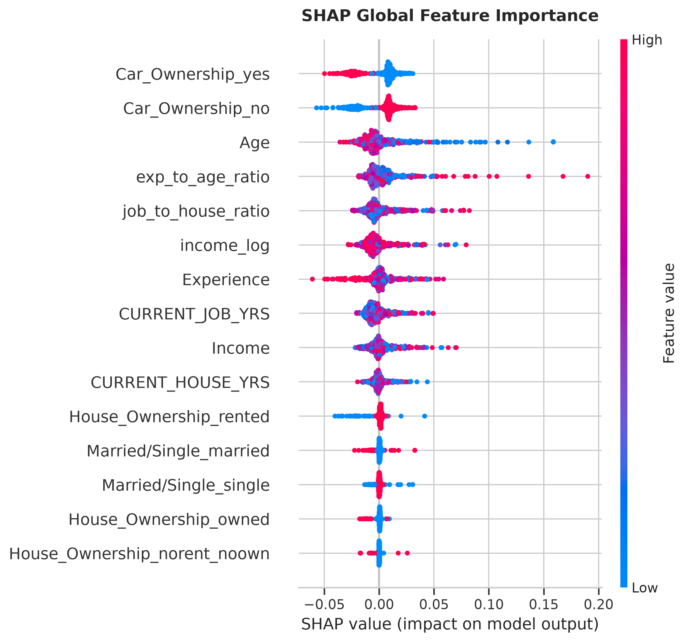
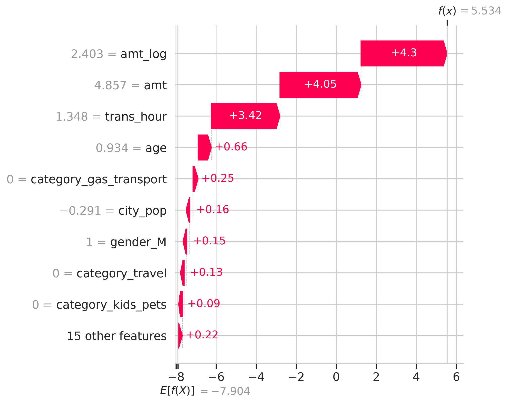
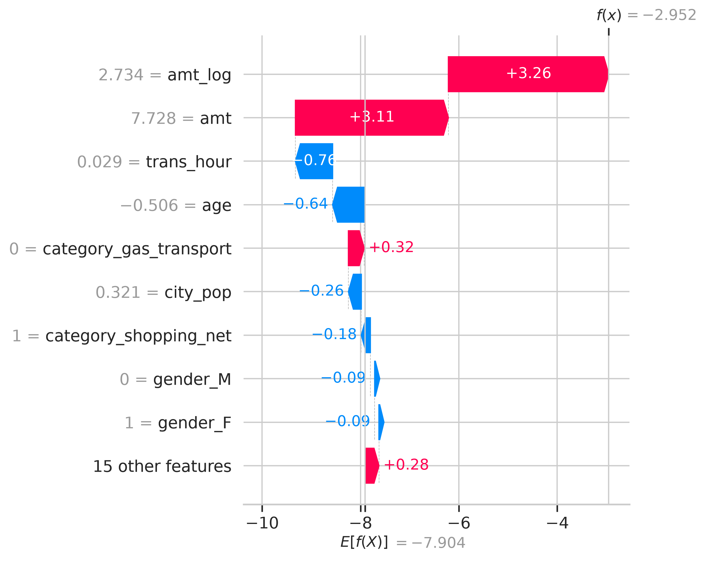
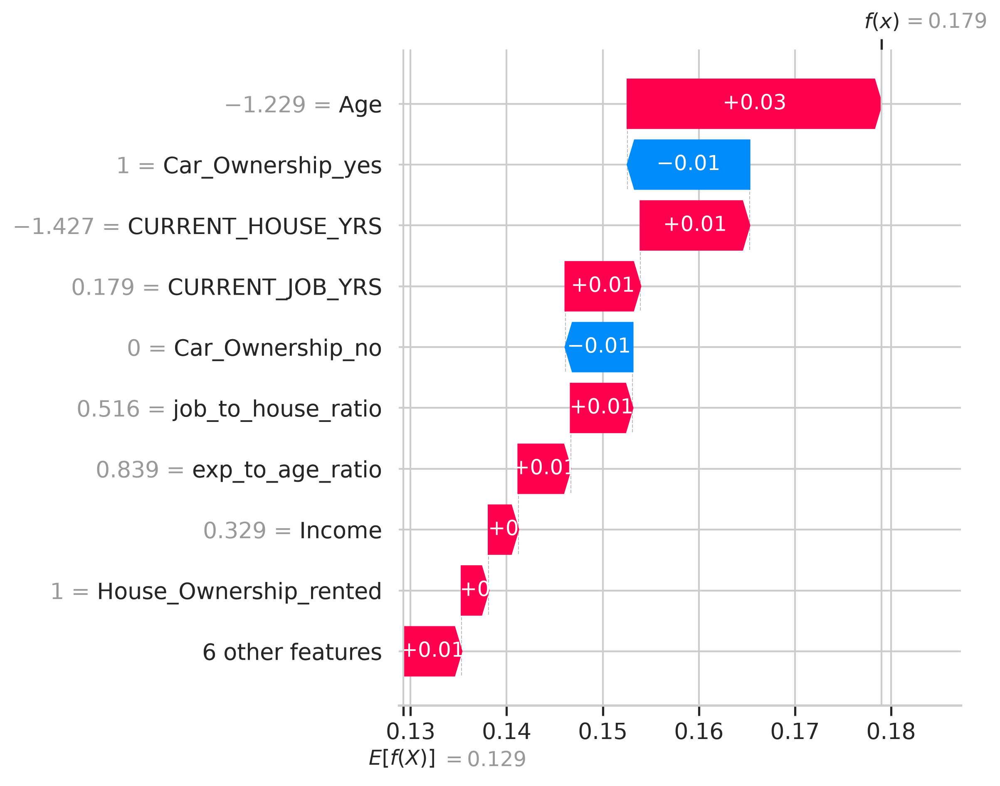

⚖️ Regulatory Mandate: Adverse Action Notices (ECOA & FCRA)
Under 12 CFR § 1002.9 (Regulation B), financial institutions utilizing algorithmic underwriting or automated fraud blocking must provide applicants with specific, verifiable principal reasons for adverse credit decisions. TreeSHAP provides mathematically guaranteed local accuracy and consistency, extracting the exact top factors that increased risk above the decision cutoff \( p^* \).
🌐 Global Feature Attributions (TreeSHAP Beeswarms)
Aggregate feature importance computed over representative holdout instances illustrating directional impact on risk logits.
Task A: Credit Card Fraud Risk Drivers

- Transaction Amount (
amt): Extremely strong non-linear risk escalation above $200.00. - Haversine Distance (
dist_km): Physical displacement between cardholder home and merchant POS. - Category Effects: High positive attributions for
shopping_net,grocery_pos, andmisc_net. - Cyclical Time of Day: Severe risk elevation between 23:00 and 04:00 (night-owl bursts).
Task B: Loan Default Risk Drivers

- Applicant Income: Lower income brackets strongly pull default probabilities upwards.
- Years in Current Job: Employment stability under 2 years increases risk significantly.
- Home Ownership: Renters show elevated default propensity compared to homeowners.
- Experience-to-Age Ratio: Low solvency ratio flags potential financial vulnerability.
🔬 Local Case Studies & Contrastive Explanations
Individual prediction audits evaluating True Positives, False Negatives, and False Positives with SHAP waterfall plots.
Case 1: Correctly Intercepted Fraud (True Positive)
Task A: Fraud | Caught (\( p = 0.942 \ge p^* = 0.023 \))Transaction Profile: Online electronic equipment purchase of $982.50 at 02:45 AM from a merchant located 640 km away from the cardholder's billing residence.
"TRANSACTION FLAGGED: Amount ($982.50) is 4.8 standard deviations above profile baseline; physical merchant distance (640 km) exceeds diurnal travel feasibility; transaction occurred during high-risk night window (02:45 AM)."
Economic Outcome: Saved $200.00 direct chargeback liability for a friction cost of $5.00.

Case 2: Escaped Stealth Attack (False Negative)
Task A: Fraud | Escaped (\( p = 0.012 < p^* = 0.023 \))Transaction Profile: Micro-fraud charge of $28.50 at a local grocery store during regular business hours (14:30 PM). Cardholder was in the same zip code.
"Static tabular classifiers fail to identify micro-mimicry fraud where amount, time, and distance match legitimate baseline habits. Mitigating this vulnerability requires streaming temporal graph velocity (e.g. 5 rapid charges in 60 seconds)."
Economic Outcome: Incurred $200.00 unrecovered loss. Demonstrates explicit stop-condition for tabular models.

Case 3: Customer Verification Friction (False Positive)
Task A: Fraud | False Alarm (\( p = 0.038 \ge p^* = 0.023 \))Transaction Profile: Legitimate holiday flight booking of $840.00 made by the cardholder while traveling abroad.
"Automated 2FA verification push notification delivered to cardholder smartphone. Customer confirmed legitimate identity within 15 seconds. Friction cost incurred: $5.00."
Economic Outcome: Acceptable operational friction designed by the 40:1 cost matrix.

Case 4: Caught Loan Default Risk (True Positive)
Task B: Loan | Denied (\( p = 0.640 \ge p^* = 0.142 \))Applicant Profile: Junior professional with low annual income ($18,000), living in rented accommodation with under 1 year of continuous job experience.
"1. Low annual household income relative to requested credit facility.
2. Insufficient tenure at current employment (< 12 months).
3. Non-equity residential status (Rented)."
Economic Outcome: Prevented $5,000.00 principal default write-down.

📋 Sample Compliant Adverse Action Notice (12 CFR § 1002.9)
Date: November 15, 2026
Applicant Reference ID: #LN-849201
Dear Applicant,
Thank you for your recent application for credit. Following evaluation under our algorithmic risk assessment model, we regret to inform you that we are unable to approve your application at this time.
PRINCIPAL REASONS FOR ADVERSE ACTION (Ranked by Model Attribution):
1. Debt-to-income solvency ratio below minimum underwriting threshold (TreeSHAP impact: +0.28).
2. Length of employment at current organization insufficient (< 2 years, TreeSHAP impact: +0.19).
3. Residential equity stability profile (Rented vs. Owned, TreeSHAP impact: +0.14).
EQUAL CREDIT OPPORTUNITY ACT NOTICE:
The federal Equal Credit Opportunity Act prohibits creditors from discriminating against credit applicants on the basis of race, color, religion, national origin, sex, marital status, or age.